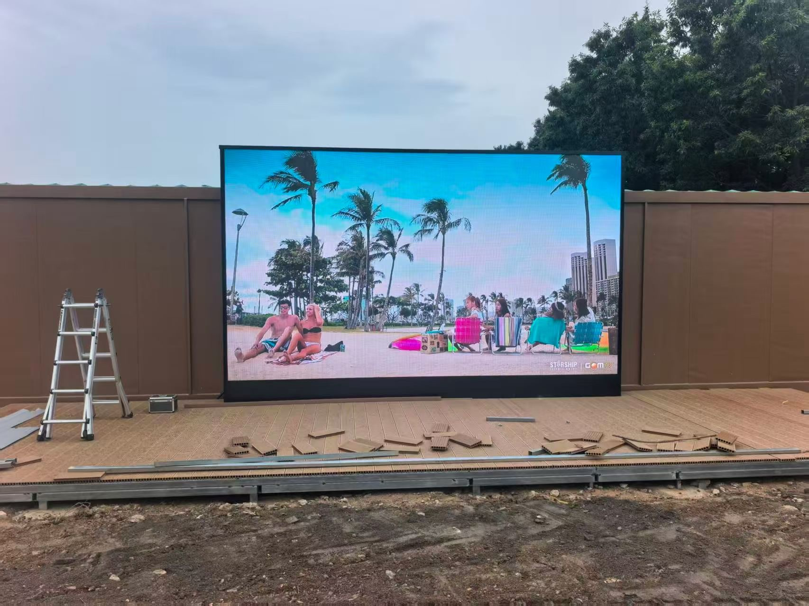
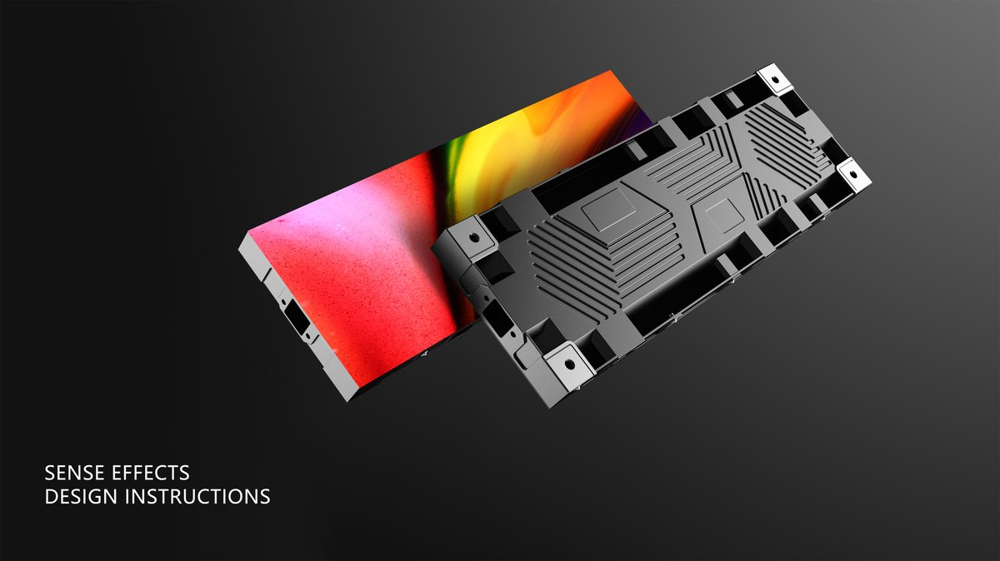

By Cassie
What does an Albania LED display importer need to know? Importing LED displays into Albania means registering as an importer, clearing goods through Albanian customs, confirming CE compliance, and planning for a logistics route that passes through European gateways. This 2026 guide explains the process.
Albania is a smaller but active LED display market, with demand from retail, hospitality, events, and urban development projects. Most screens are imported from China, and the route usually passes through a European gateway before reaching the Albanian border.
An Albania LED display importer who confirms the registration and the certification position in advance clears cargo without difficulty. The additional factor is the transit arrangement, which affects both the transit time and the customs documentation.
Before the paperwork, it helps to know who is actually buying LED displays in this market — the demand pools are not identical, and they buy differently.
| Demand pool | What they buy | How they buy |
|---|---|---|
| Distributors and AV resellers | Full product ranges for resale | Buy to supply local projects across the region |
| Systems integrators | Project-specific panels with drawings | Need technical documentation and certification support |
| Event and rental companies | Rental cabinets, touring packaging | Fleet purchases, replacement stock |
| Hospitality and retail | Indoor signage, hotel screens | Tourism-driven, coastal projects |
Albania is a supply-led market: buyers are looking for a manufacturer who can support a distributor relationship, not a one-off shipment. Clear pricing tiers, spare-parts terms and documentation are what win the account.
Importers in Albania register with the tax authority and obtain the customs registration needed to operate in foreign trade. The registration identifies the entity that files the declaration and carries legal responsibility for its accuracy.
Confirm the registration before the first shipment. A cargo that arrives before the importer is registered is held while the paperwork is completed, and storage charges accrue throughout.
| Step | What Is Required | Who Handles It |
|---|---|---|
| Tax registration | Registration with the tax authority | Importer |
| Customs registration | Right to operate in foreign trade | Importer |
| Broker appointment | Licensed customs broker | Importer |
| Customs declaration | Entry with classification and value | Broker |
| Duty and VAT | Assessed on the customs value | Importer |
| Product conformity | CE marking and supporting evidence | Supplier, verified by importer |
Work with a broker who understands electronic goods and the transit route. The classification of a display, its power supply, and its control hardware differs, and each line carries its own treatment.
Duty is assessed on the customs value, normally the transaction value adjusted to the agreed Incoterm. Albania applies a tariff schedule with rates that vary by commodity code, and value added tax applies on top.
| Cost Element | Basis | Notes |
|---|---|---|
| Customs duty | Commodity code and value | Rate varies by code |
| Value added tax | Value plus duty | Standard rate applies |
| Broker fee | Per declaration | Varies by broker |
| Transit and port charges | At the European gateway | Depends on the routing chosen |
| Storage | Per day after the free period | Mounts if documents are late |
| Inland transport | By distance and size | Confirm delivery to site |
Model the full landed cost including the transit leg, because cargo routed through a European gateway passes through a second customs territory. The transit arrangement affects both the cost and the documentation required.
Confirm the transit procedure with the broker before dispatch. Where goods move under a transit arrangement, the documentation must be correct at both ends, and an error at the gateway delays the cargo.
Albania aligns much of its product regulation with European practice, and LED displays generally require CE marking supported by a declaration of conformity and technical documentation. The marking covers the applicable directives, typically electromagnetic compatibility, electrical safety, and hazardous substance limits.
| Requirement | What It Covers | Evidence to Hold |
|---|---|---|
| CE marking | Product conformity | Declaration of conformity |
| EMC test report | Electromagnetic compatibility | Report naming the offered model |
| Safety test report | Electrical safety | Report naming the offered model |
| RoHS restriction | Hazardous substance limits | Supplier declaration and test data |
| Technical file | Drawings and specifications | Complete file held by the importer |
| Warranty documentation | Coverage terms | Written warranty statement |
Confirm that the declaration and reports name the exact model being supplied. A CE file covering a different model in the same range does not satisfy the requirement.
Most LED display cargo reaches Albania by sea to a European gateway and then by road, with air freight reserved for urgent spare parts. The route adds a transit stage compared with a direct sea shipment, and the total lead time includes that leg.
| Stage | Typical Duration | What Can Delay It |
|---|---|---|
| Production | 15 to 25 working days | Component availability and queue |
| Inland to port and export | 3 to 5 days | Booking availability |
| Sea freight to gateway | Varies by route | Routing and congestion |
| Transit and onward road | 3 to 8 days | Border formalities and documentation |
| Import clearance | 2 to 5 days | Documentation queries |
| Total | Approximately 6 to 9 weeks | Add a buffer for the transit stage |
Build the schedule from the total figure rather than the sea leg alone. The transit and road stage is where most variance occurs, and a screen tied to a fixed opening has no room to absorb it.
Albania has a Mediterranean climate with hot, dry summers and mild winters, and coastal sites face humidity and salt air. Interior sites at higher altitude see colder winters and more snow.
For Albanian sites, low winter temperatures make cabinet construction and sealing the deciding factors — the X Series uses standard 500×500mm cabinets with front/rear service, and the COB EF outdoor series is sealed against snow-melt and moisture ingress.
| Condition | Risk | Specification Response |
|---|---|---|
| Coastal humidity and salt | Corrosion of connectors | Sealed cabinets and corrosion protection |
| Hot dry summers | Thermal stress | Adequate temperature rating and airflow |
| Interior winter cold | Thermal performance | Cold-rated components where needed |
| Dust at inland sites | Cooling path blockage | Filtration and cleaning schedule |
| Variable supply voltage | Driver damage | Power conditioning on site |
| Summer tourism season peaks | Demand timing pressure | Order well ahead of the season |
Plan the order around the seasonal demand peak. A screen needed for the summer season must be ordered well in advance, because production and the transit route together consume six to nine weeks.
Ask every candidate the same questions and record the answers. For Albanian projects the CE evidence and the transit arrangement matter as much as the price.
| Question | What a Strong Answer Looks Like | Warning Sign |
|---|---|---|
| CE documentation | Declaration and reports for the model | Certificate for a different model |
| Transit support | Documentation guidance provided | Not addressed |
| Driver IC and power supply | Named brand and exact model | Brand only, no part number |
| Spare parts availability | Stated period in writing | No commitment given |
| Service response | Stated time by fault severity | Answer avoided |
| Reference projects | References in the region | Logo list with no contacts |
Confirm the components in writing and require written approval for any substitution. A supplier facing a shortage may change a part quietly, and the change only appears when the screens arrive.
Payment usually follows a deposit and balance structure, with a deposit at the order and the balance before shipment. The split depends on the relationship and on whether the product is standard or custom.
| Term | Typical Structure | Suited To |
|---|---|---|
| Deposit and balance | 30 percent deposit, 70 percent before shipment | First orders and smaller projects |
| Higher deposit | 50 percent deposit, 50 percent before shipment | Custom or non-standard products |
| Letter of credit | Bank instrument against documents | Large orders between new parties |
| Payment after inspection | Balance released on inspection pass | Where an inspector is used |
| Escrow | Funds held until delivery is confirmed | First transactions with a new supplier |
| Open account | Payment after delivery | Established long-term relationships |
Whatever the structure, tie the final payment to verifiable evidence such as a passed inspection or shipping documents that match the order.
Each mistake is inexpensive to avoid during planning and costly after the goods land. An Albania LED display importer who confirms the registration, models the transit cost, and assembles the CE file avoids most of them.
Asia Vision Technology manufactures LED displays in Shenzhen and supplies importers, distributors, and contractors worldwide. The factory produces the CE declaration and test reports Albanian importers need and holds spare parts for the stated warranty period.
For Albanian projects the company supplies rental cabinets for events and hospitality, fine pitch screens for retail and corporate work, and outdoor displays for advertising and public spaces. OEM and ODM production is available for distributors building their own range.
